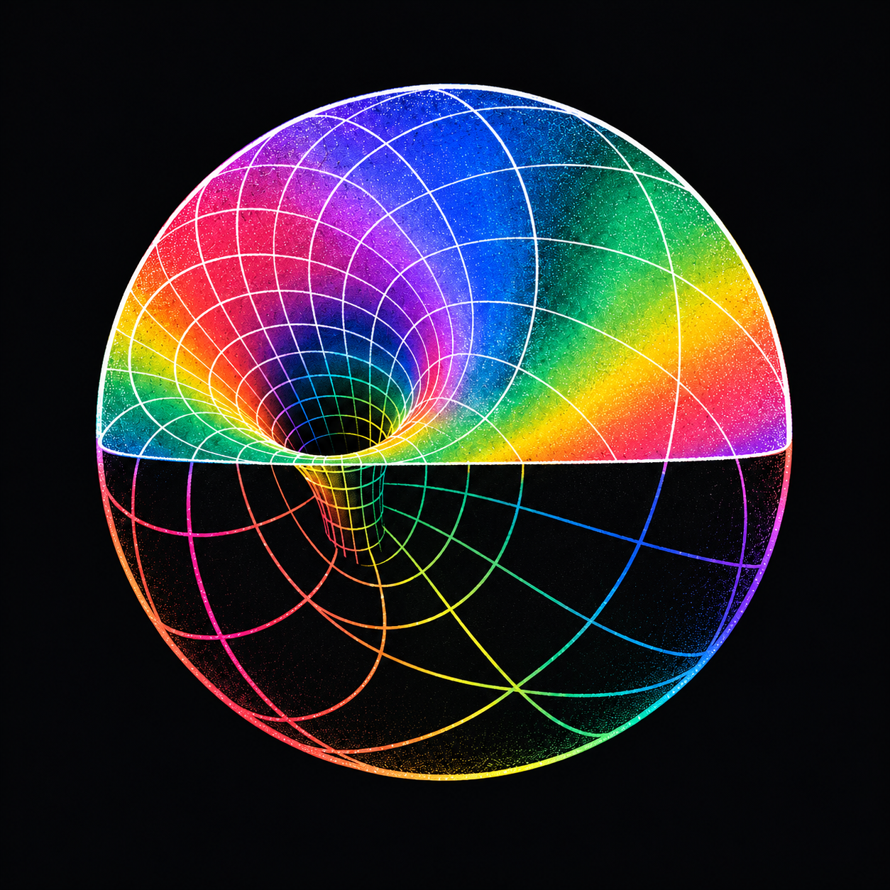
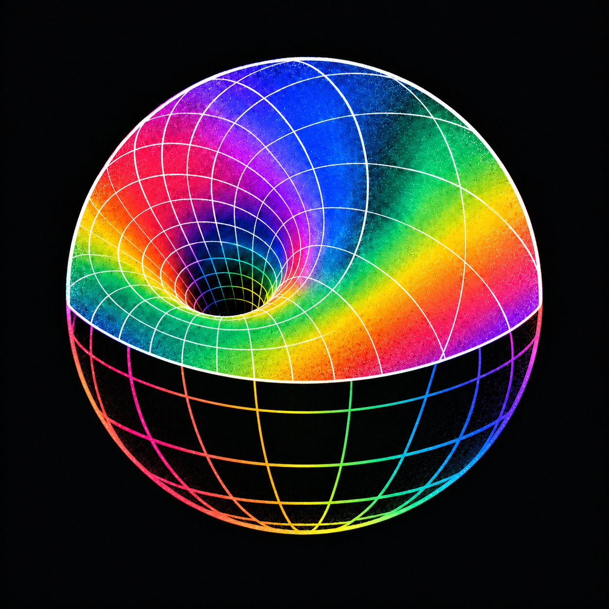

AETHER / UPPER WELL & OPEN FRAME / 08
上方内陷，下方留空。
保留上方吸入漏斗，移除下方喉管；彩色表面略微扩大，交界改成平缓弧线。

修改前
上方漏斗造型已认可；下方喉管需移除。

弧形交界／空框架
原图 ↙上方彩面与白线；下方黑色负形与彩色球面线框。
AETHER / UPPER WELL & OPEN FRAME / 08
保留上方吸入漏斗，移除下方喉管；彩色表面略微扩大，交界改成平缓弧线。

上方漏斗造型已认可；下方喉管需移除。

上方彩面与白线；下方黑色负形与彩色球面线框。